• Youtube :
https://www.youtube.com/@sssrobotics

📌 안녕하세요!
S급 로봇 연구소(SSS Robotics)입니다. 🤖오늘은 NVIDIA Isaac Sim에서 기존에 설계된 로봇 모델을 가져와 시뮬레이션하는 방법을 알아보겠습니다.
지난 시간에는 기본 도형을 활용하여 로봇의 몸체와 바퀴, 관절을 직접 제작하고 카메라와 LiDAR를 장착했습니다.
이번 시간에는 ROS에서 널리 사용되는 로봇 설계 파일인 URDF를 활용하여 실제 로봇의 구조를 Isaac Sim에 가져오는 과정을 학습합니다.
URDF Importer를 통해 로봇의 링크와 관절을 변환하고, 물리 속성과 차동 제어기를 설정합니다.
또한 RGB 카메라와 LiDAR를 추가하고, NVIDIA에서 제공하는 Nova Carter 모델과 비교하면서 로봇 에셋의 구성과 활용 방법을 알아보겠습니다.

📚 목차
- 📖 오늘의 진행 내용 (Today's Topics)
- 📕 1. URDF의 개념과 로봇 구조 이해
- 📄 1-1. URDF(Unified Robot Description Format)란?
- 📄 1-2. URDF와 USD의 관계
- 📄 1-3. Carter URDF 구조 살펴보기
- 📕 2. URDF Importer를 활용한 Carter 로봇 가져오기
- 📄 2-1. URDF Importer란?
- 📄 2-2. Carter 로봇 가져오기
- 📄 2-3. USD 변환 결과 확인
- 📕 3. Isaac Sim에서 로봇 시뮬레이션 준비
- 📄 3-1. 바닥 환경 구성
- 📄 3-2. 관절 구조 확인
- 📄 3-3. 바퀴 회전 실습
- 📕 4. 차동 제어기와 로봇 주행
- 📄 4-1. Differential Controller 설정
- 📄 4-2. OmniGraph와 키보드 조종
- 📄 4-3. 주행 속도 제한
- 📕 5. 가져온 로봇에 RGB 카메라와 LiDAR 장착
- 📄 5-1. URDF와 센서 구성
- 📄 5-2. RGB Camera 장착
- 📄 5-3. 장애물 환경 구성
- 📄 5-4. 2D LiDAR 장착
- 📄 5-5. 카메라와 LiDAR의 역할 비교
- 📕 6. NVIDIA Nova Carter 살펴보기
- 📄 6-1. Nova Carter란?
- 📄 6-2. Nova Carter의 센서 구성
- 📄 6-3. Carter와 Nova Carter 비교
- 📜 회고 및 다음 과제 (Retropective&Next Steps)
- 💡 오늘 배운 핵심 내용
- 📝 추가 실습 미션
- A. 장애물 코스 주행
- B. 로봇 구조 비교
- 📋 공식 퀴즈
- 🚀 다음 시간
- DLI 1. Robotics Foundations – 통합 실습
- 👥 참고 문헌 (References)
- 📨 문의하기 (Contact us)
📖 오늘의 진행 내용 (Today's Topics)
📕 1. URDF의 개념과 로봇 구조 이해
📄 1-1. URDF(Unified Robot Description Format)란?
URDF는 로봇의 물리적인 구조와 구성요소를 XML 형식으로 표현하는 로봇 설계 파일입니다.
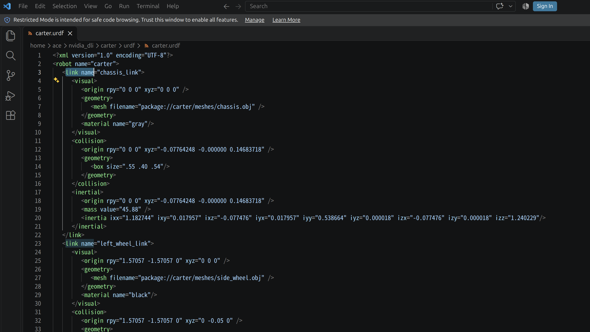
로봇의 각 부품과 연결 관계를 정의하여 ROS 기반의 로봇 시스템에서 활용합니다.
주요 구성요소는 다음과 같습니다.
- Link: 로봇을 구성하는 개별적인 강체 부품입니다.
- Joint: 링크와 링크를 연결하는 관절입니다.
- Visual: 로봇의 외형을 표현하는 모델입니다.
- Collision: 물체 간 충돌을 계산하기 위한 형상입니다.
- Inertial: 질량과 관성 정보를 정의합니다.
일반적으로 URDF에는 센서와 제어기, 재질의 세부 물리 특성이 포함되지 않으므로 Isaac Sim에서 추가로 구성할 수 있습니다.
📄 1-2. URDF와 USD의 관계
URDF는 로봇의 구조를 정의하는 XML 설계 파일이며, USD는 Isaac Sim에서 3D 장면과 객체, 물리 속성을 표현하는 데 사용됩니다.
URDF Importer는 URDF에 정의된 로봇 구조를 Isaac Sim에서 사용할 수 있는 USD 기반 에셋으로 변환합니다.
📄 1-3. Carter URDF 구조 살펴보기
이번 실습에서는 NVIDIA에서 제공하는 Carter 로봇의 carter.urdf 파일을 확인합니다.
주요 링크와 관절 구조는 다음과 같습니다.
- chassis_link: 로봇의 중심 몸체입니다.
- left_wheel / right_wheel: 좌우 구동 바퀴입니다.
- rear_pivot: 후방 캐스터의 방향을 변경하는 관절입니다.
- rear_axle: 후방 캐스터 바퀴의 회전 관절입니다.
- com_offset / imu: 고정 링크로 구성된 보조 구조입니다.
특히 캐스터(Caster)는 모터 없이 로봇의 이동 방향에 따라 자연스럽게 방향을 변경하는 보조 바퀴입니다.
📕 2. URDF Importer를 활용한 Carter 로봇 가져오기
📄 2-1. URDF Importer란?
URDF Importer는 URDF 파일을 Isaac Sim으로 가져와 로봇의 링크와 관절, 물리 구조를 자동으로 변환하는 도구입니다.
지난 실습에서는 몸체와 바퀴, 관절 및 물리 속성을 직접 구성했지만, URDF Importer를 활용하면 기존에 정의된 로봇 구조를 효율적으로 가져올 수 있습니다.
📄 2-2. Carter 로봇 가져오기
Isaac Sim의 File > Import 메뉴에서 carter.urdf를 선택하여 가져옵니다.
주요 설정은 다음과 같습니다.
- Links: Moveable Base
- Joint Configuration: Natural Frequency
- left_wheel / right_wheel: Velocity
- rear_axle / rear_pivot: None
Moveable Base는 이동로봇처럼 바닥에 고정하지 않는 로봇에 사용하며, Velocity는 바퀴의 회전 속도를 제어할 때 사용합니다.
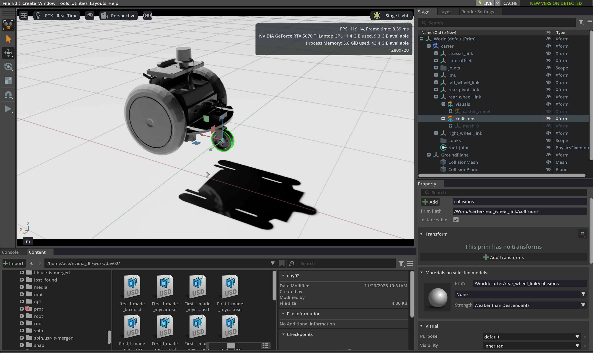
📄 2-3. USD 변환 결과 확인
Import가 완료되면 Stage에 /World/carter가 생성됩니다.
가져온 로봇에는 다음 구조가 포함됩니다.
- 로봇의 개별 링크를 나타내는 Xform
- 로봇 관절을 관리하는 joints
- 물리적 속성과 관절 연결 정보
- Articulation Root
이를 통해 URDF의 링크와 관절 구조가 Isaac Sim의 USD 객체로 변환되는 과정을 확인합니다.
📕 3. Isaac Sim에서 로봇 시뮬레이션 준비
📄 3-1. 바닥 환경 구성
가져온 Carter 로봇은 처음에는 바닥이 없는 상태로 배치됩니다.
Create > Environments > Flat Grid를 활용하여 바닥 환경을 구성하고 로봇의 위치를 조정합니다.
Play를 실행하여 로봇이 바닥에 정상적으로 안착하는지 확인합니다.
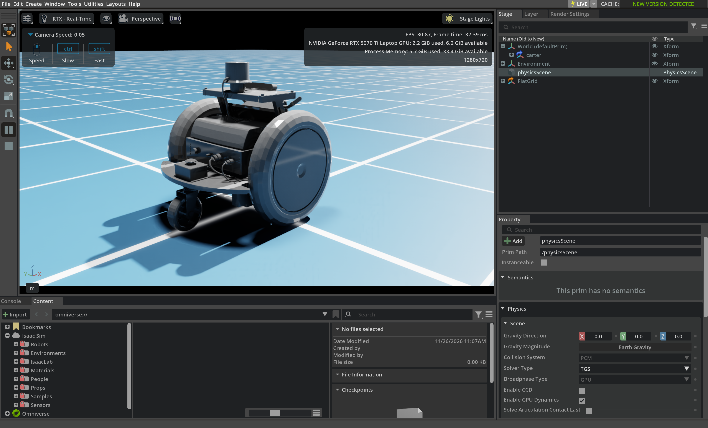
📄 3-2. 관절 구조 확인
Stage에서 joints 폴더를 펼쳐 각 관절의 연결 관계와 회전축을 확인합니다.
- left_wheel / right_wheel: Y축 회전, 구동 관절
- rear_pivot: Z축 회전, 캐스터 방향 전환
- rear_axle: Y축 회전, 캐스터 바퀴 회전
구동 바퀴와 수동 바퀴가 서로 다른 역할을 수행한다는 점을 이해합니다.
📄 3-3. 바퀴 회전 실습
좌우 바퀴의 Target Velocity를 설정하여 로봇의 움직임을 확인합니다.
- 좌우 바퀴가 같은 속도로 회전하면 직진합니다.
- 한쪽 바퀴의 속도를 변경하면 회전합니다.
- 후방 캐스터는 로봇의 움직임에 따라 방향을 자연스럽게 변경합니다.
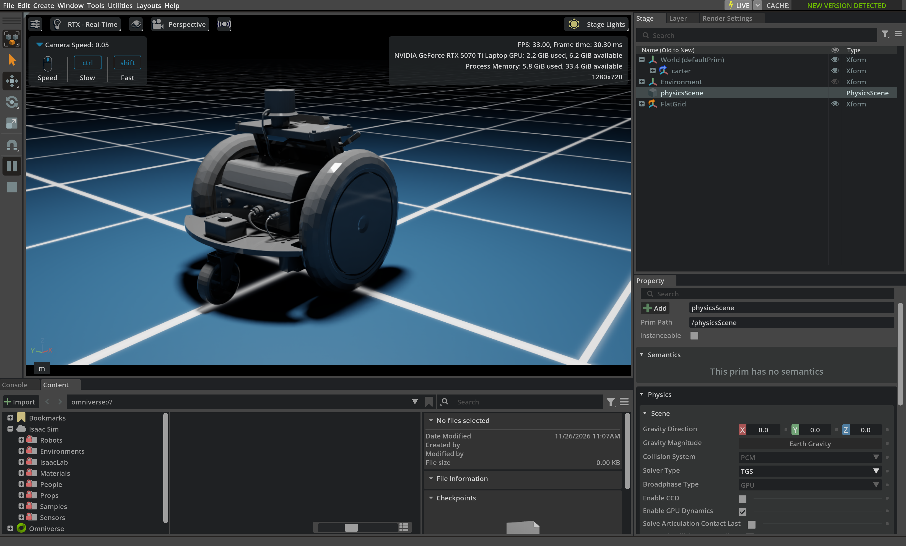
📕 4. 차동 제어기와 로봇 주행
📄 4-1. Differential Controller 설정
Differential Controller는 로봇의 선속도와 각속도를 좌우 바퀴의 회전 속도로 변환하는 제어기입니다.
이번 Carter 실습에서는 URDF에서 가져온 바퀴의 실제 치수를 적용합니다.
- Robot Prim:
/World/carter - Wheel Radius: 0.24m
- Distance Between Wheels: 0.62m
- Right Joint Name: left_wheel
- Left Joint Name: right_wheel
📄 4-2. OmniGraph와 키보드 조종
Differential Controller를 생성하면 OmniGraph에 키보드 입력과 차동 제어를 위한 노드가 구성됩니다.
WASD 키 입력을 통해 로봇의 선속도와 각속도를 제어합니다.
- W: 전진
- S: 후진
- A: 좌회전
- D: 우회전
📄 4-3. 주행 속도 제한
처음 생성된 제어기는 키보드 입력에 비해 Carter 로봇의 크기와 바퀴 특성에 맞지 않는 빠른 속도를 만들 수 있습니다.
따라서 DifferentialController의 속도 제한값을 조정합니다.
- maxLinearSpeed: 0.5m/s
- maxAngularSpeed: 0.5rad/s
속도 제한을 적용한 뒤 로봇이 안정적으로 직진하고 회전하는지 확인합니다.
📕 5. 가져온 로봇에 RGB 카메라와 LiDAR 장착
📄 5-1. URDF와 센서 구성
URDF는 일반적으로 로봇의 몸체 구조와 관절을 정의하며 센서는 별도로 추가해야 합니다.
이번 실습에서는 Carter의 chassis_link 아래에 센서를 직접 추가하여 로봇의 움직임에 따라 함께 움직이도록 구성합니다.
📄 5-2. RGB Camera 장착
로봇의 전방을 바라보도록 RGB 카메라를 추가합니다.
- 이름: RGB_Sensor
- 위치(Translate): (0.1, 0, 0.33)
- 회전(Orient): (90, -90, 0)
Viewport 2를 활용하여 전체 장면과 로봇 카메라의 시점을 동시에 확인합니다.
📄 5-3. 장애물 환경 구성
로봇 주변에 Cube, Cylinder, Cone 등의 기본 도형을 배치하여 장애물 환경을 만듭니다.
카메라 시점에서 장애물의 형태와 위치가 어떻게 보이는지 확인합니다.
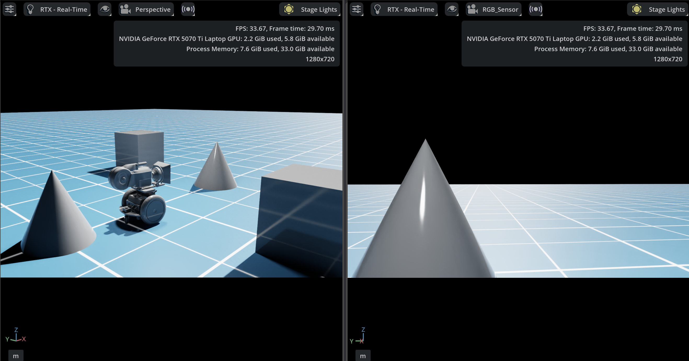
📄 5-4. 2D LiDAR 장착
PhysX LiDAR를 추가하여 주변 장애물까지의 거리 정보를 측정합니다.
- 센서 종류: PhysX LiDAR
- 방식: Rotating
- 위치(Translate): (-0.05, 0, 0.42)
Raw USD Properties에서 drawLines를 활성화하면 LiDAR의 측정 결과를 시각적으로 확인할 수 있습니다.
PhysX LiDAR는 물리적인 충돌 형상을 기준으로 측정하기 때문에 장애물에 Collider가 설정되어 있어야 정상적으로 감지합니다.
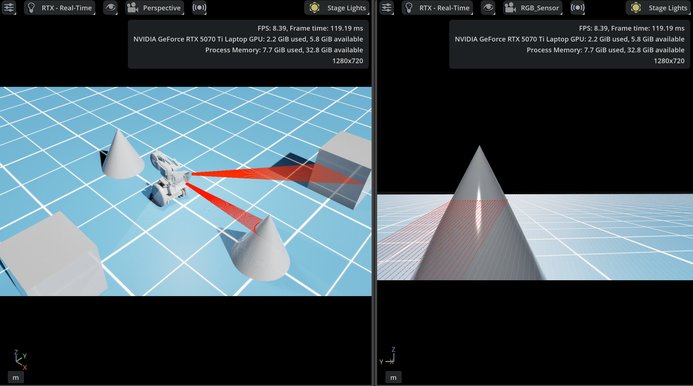
📄 5-5. 카메라와 LiDAR의 역할 비교
- RGB Camera: 주변에 무엇이 있는지 영상으로 확인합니다.
- LiDAR: 주변 물체까지의 거리와 공간 정보를 측정합니다.
두 센서는 서로 다른 정보를 제공하며, 함께 활용하면 로봇의 주변 환경을 보다 효과적으로 파악할 수 있습니다.
📕 6. NVIDIA Nova Carter 살펴보기
📄 6-1. Nova Carter란?
Nova Carter는 NVIDIA Isaac Sim에서 제공하는 자율이동로봇 참조 플랫폼입니다.
실제 Jetson AGX Orin 기반 자율이동로봇 플랫폼을 시뮬레이션 환경에 구현한 모델로, Isaac ROS와 Nav2 등의 예제에서 활용됩니다.
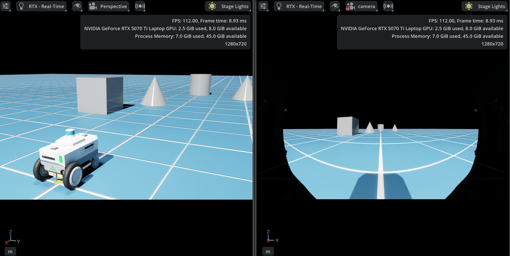
📄 6-2. Nova Carter의 센서 구성
Create > Robots > Nova Carter with Sensors 메뉴를 통해 사전 구성된 로봇을 불러올 수 있습니다.
Nova Carter는 센서와 재질, 물리 속성이 이미 구성되어 있어 별도의 URDF Import나 센서 장착 과정 없이 사용할 수 있습니다.
주요 센서 구성은 다음과 같습니다.
- Stereo Camera: 전방 및 좌우, 후방 카메라 구성
- Fisheye Camera: 어안 카메라
- RTX 2D LiDAR: 전방 및 후방 거리 측정
- RTX 3D LiDAR: 3차원 공간 정보 측정
- IMU: 로봇의 움직임 및 자세 정보 측정
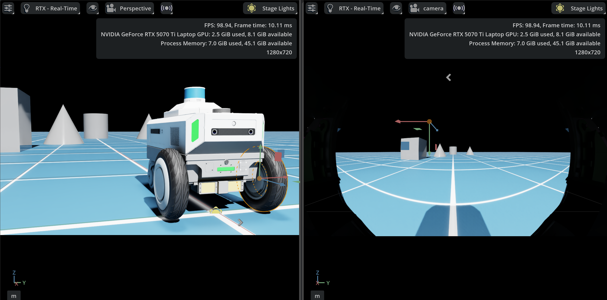
📄 6-3. Carter와 Nova Carter 비교
Carter는 URDF Importer를 통해 로봇 구조를 직접 가져오고 센서와 제어기를 추가하는 실습용 모델입니다.
Nova Carter는 센서와 물리 속성이 사전에 구성된 참조 로봇입니다.
두 모델을 비교하면서 로봇의 기본 구조와 센서 구성, 시뮬레이션 준비 과정의 차이를 이해합니다.
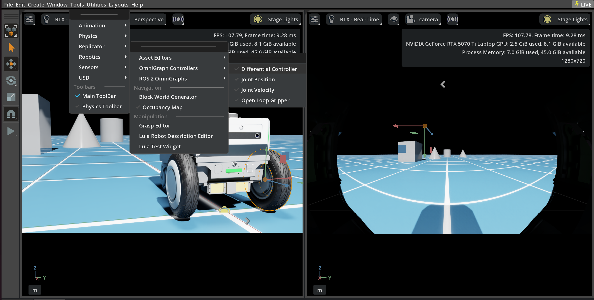
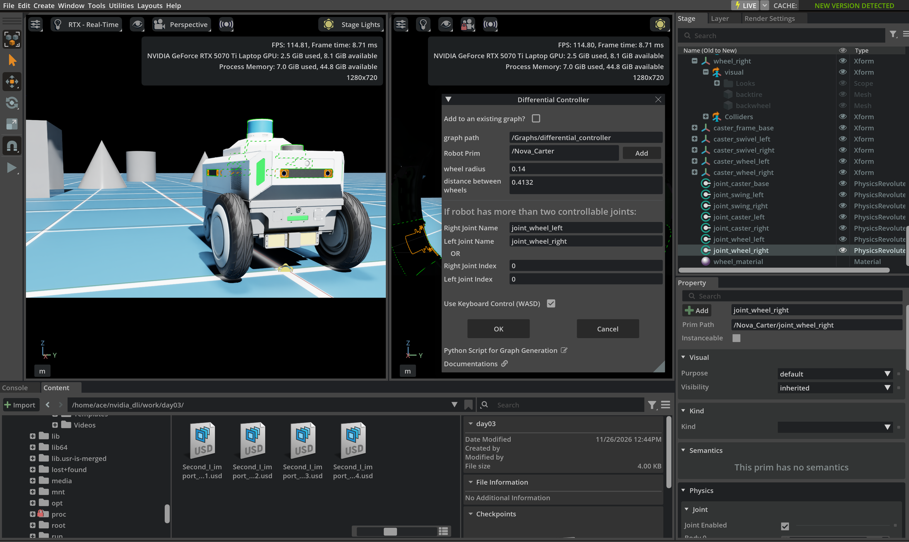
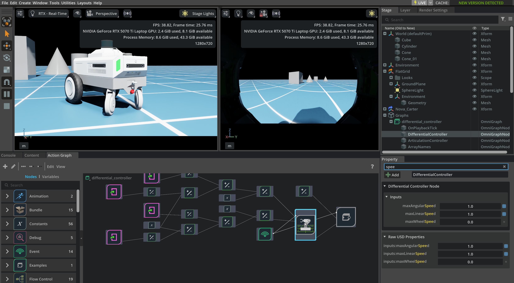
📜 회고 및 다음 과제 (Retropective&Next Steps)

💡 오늘 배운 핵심 내용
- URDF는 로봇의 링크, 관절, 형상 및 질량 정보를 정의하는 XML 설계 파일입니다.
- URDF Importer를 활용하면 기존 로봇 구조를 Isaac Sim의 USD 에셋으로 변환할 수 있습니다.
- 이동로봇의 구동 관절과 수동 관절은 서로 다른 방식으로 설정합니다.
- Differential Controller를 활용하여 로봇의 속도와 방향을 제어합니다.
- RGB Camera와 LiDAR를 통해 주변 환경의 영상 및 거리 정보를 수집합니다.
- Nova Carter는 다양한 센서와 물리 속성이 사전 구성된 자율이동로봇 참조 플랫폼입니다.
📝 추가 실습 미션
A. 장애물 코스 주행
장애물로 S자 형태의 좁은 주행 경로를 구성하고 로봇을 직접 조종합니다.
- 장애물 간격을 약 1.2m로 설정합니다.
- RGB 카메라와 LiDAR 시점만 확인하면서 코스를 통과합니다.
- 주행 시간과 충돌 횟수를 기록합니다.
- maxLinearSpeed를 0.3과 0.8로 변경하여 주행 성능을 비교합니다.
B. 로봇 구조 비교
다음 세 가지 로봇의 Stage 계층 구조를 비교합니다.
- DAY 02: SimpleRobot
- DAY 04: Carter
- DAY 04: Nova Carter
비교 항목은 링크 수, 구동 관절, 수동 관절, 센서 구성 및 Articulation Root 위치입니다.
📋 공식 퀴즈
Google Classroom에서 해당 교육 범위의 공식 퀴즈를 진행합니다.
🚀 다음 시간
DLI 1. Robotics Foundations – 통합 실습
다음 과정에서는 이동로봇에서 로봇팔로 학습 범위를 확장합니다.
- UR10e 로봇 모델 가져오기
- ROS 2 로봇 설명을 활용한 에셋 구성
- 그리퍼 장착 및 Variant 구성
- 창고 시뮬레이션 환경 배치
- IK(Inverse Kinematics)를 활용한 로봇팔 동작 구현
이번 시간에 학습한 URDF Importer를 로봇팔에도 적용하여 이동로봇과 매니퓰레이터의 구조적 차이를 이해합니다.
👥 참고 문헌 (References)

- NVIDIA DLI – Ingesting Robot Assets and Simulating Your Robot in Isaac Sim
- NVIDIA Isaac Sim Documentation
- ROS 2 Documentation
- 교육 참고 자료
- URDF 로봇 가져오기 – carter.urdf 읽기
- URDF Importer로 가져오기
- 시뮬레이션 준비 – 바닥, 관절, 주행, 차동 제어기
- 가져온 로봇에 센서 달기
- 준비된 로봇 – Nova Carter
- 정리 및 미션
📨 문의하기 (Contact us)


- Youtube :
https://www.youtube.com/@sssrobotics - Blog :
https://www.sssrobotics.com
#S급로봇연구소 #로봇연구소 #sssrobotics #sss #OpenUSD #NVIDIA #IsaacSim #Omniverse #Robotics #PhysicalAI #피지컬AI #로봇 #시뮬레이션 #AI #AX #robot #simulation #엔비디아